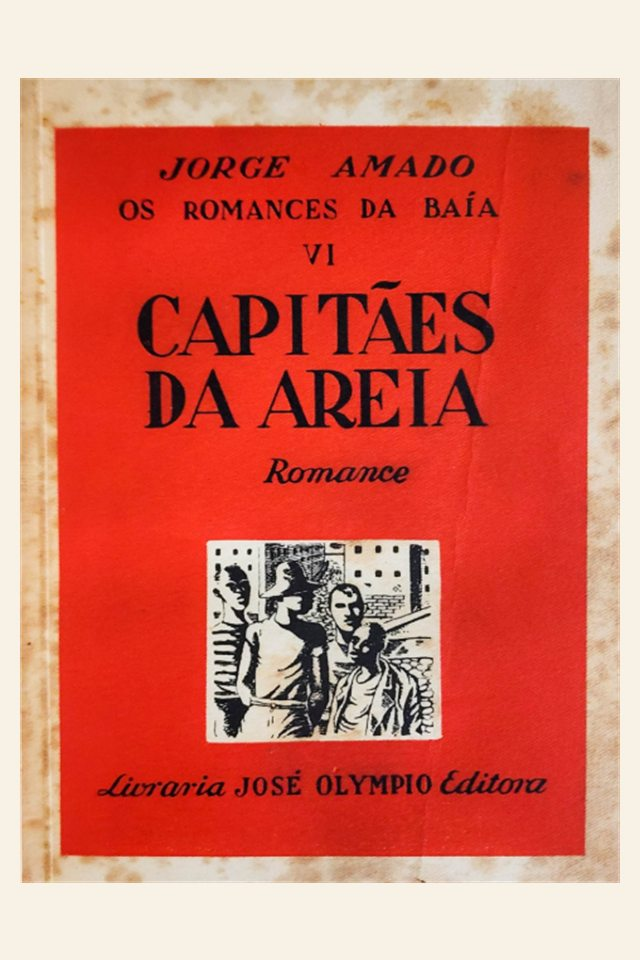

Em uma frase
Pedro Bala lidera um grupo de meninos que sobrevive por pequenos furtos e laços de solidariedade.
Meninos em situação de rua vivem em um trapiche de Salvador, entre violência, abandono, amizade e desejo de liberdade.

O romance denuncia uma sociedade que criminaliza crianças abandonadas em vez de enfrentar as causas da desigualdade.
Pedro Bala lidera um grupo de meninos que sobrevive por pequenos furtos e laços de solidariedade.
A obra alterna episódios individuais e coletivos, mostrando histórias por trás do grupo.
Jorge Amado humaniza personagens tratados pela imprensa e pelas instituições como ameaça.
O romance acompanha a vida do grupo e o destino de alguns meninos.
O grupo ocupa um velho armazém em Salvador. A cidade aparece dividida entre riqueza, repressão policial e pobreza.
Pedro Bala, Professor, Sem-Pernas, Gato, Pirulito e outros têm desejos e dores próprias, o que impede uma visão simplista do grupo.
Dora entra no grupo e passa a representar cuidado, amor e possibilidade de família. Sua presença transforma principalmente Pedro Bala.
Alguns personagens seguem para arte, religião, crime ou luta política. Pedro Bala se aproxima da militância social.
Os meninos não são tratados apenas como tipo social: cada trajetória amplia a denúncia.
Líder do grupo, corajoso e marcado pela herança de luta do pai.
Figura de afeto e cuidado; sua passagem pelo grupo altera relações e expectativas.
Menino sensível e ligado ao desenho, representa imaginação e futuro artístico.
Personagem doloroso, marcado por ressentimento, abandono e violência.
Vaidoso, esperto e sedutor, ligado à malandragem urbana.
Busca refúgio na religião e expressa conflito moral.
A obra dialoga com a literatura engajada da década de 1930 e com debates sobre injustiça urbana.
Salvador é cenário vivo, com praia, porto, religião popular e desigualdade.
Polícia, reformatório, imprensa e elite aparecem como forças de repressão.
A narrativa destaca afetos e sonhos, combatendo a desumanização dos meninos.
O final aponta para organização coletiva e luta social como horizonte.
Integra o romance social modernista, preocupado com classes populares e denúncia de estruturas opressoras.
É uma das obras mais conhecidas de Jorge Amado e um retrato marcante da infância marginalizada.
O livro foi alvo de censura e perseguição no contexto político dos anos 1930.
Foque em crítica social, marginalização e humanização dos personagens.